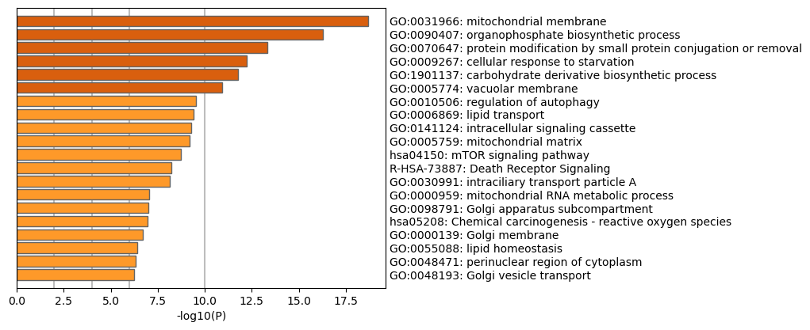
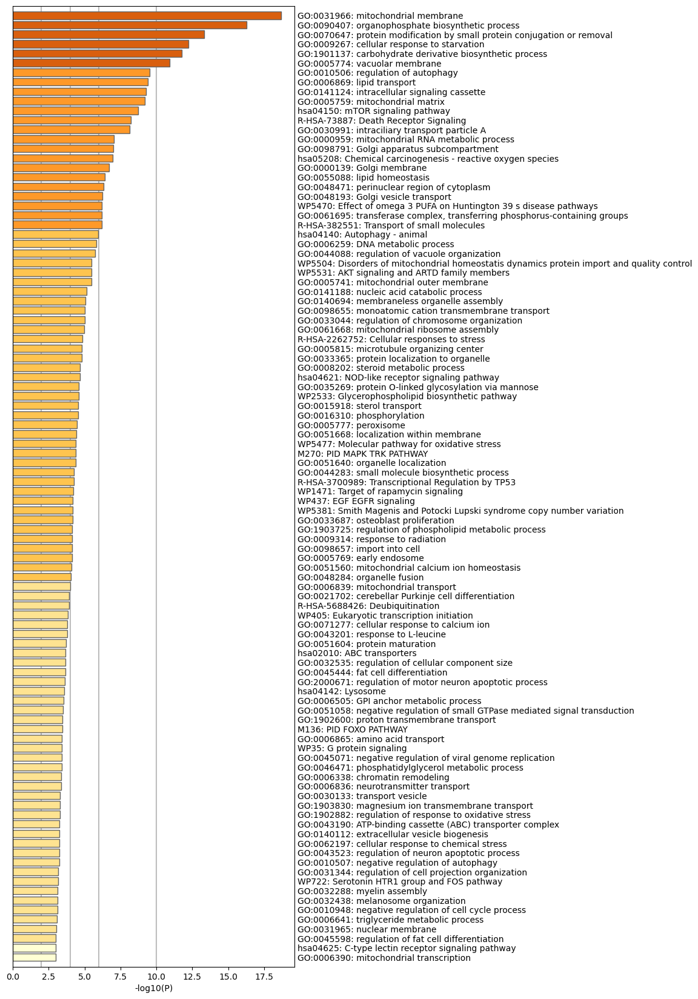
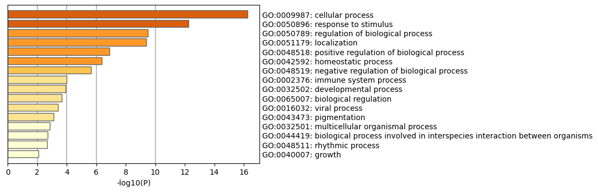
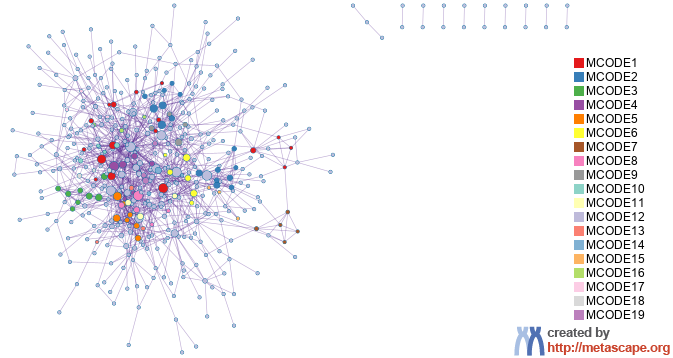
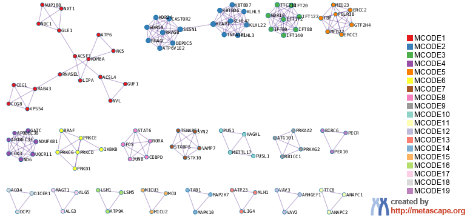
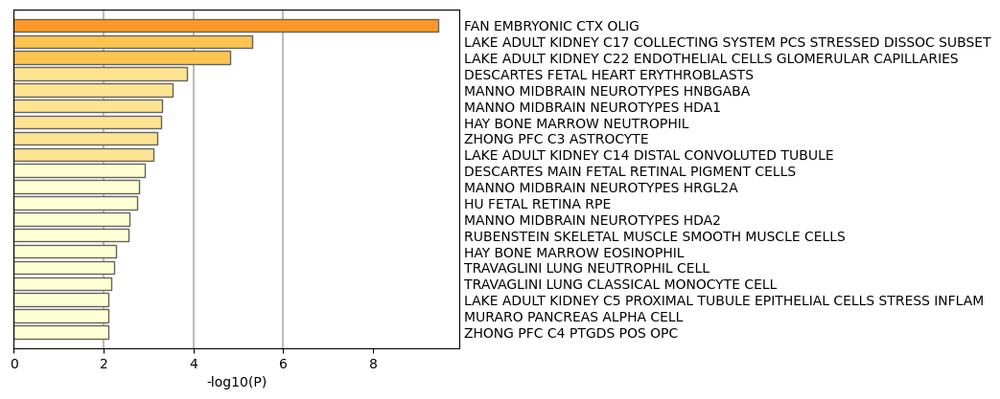
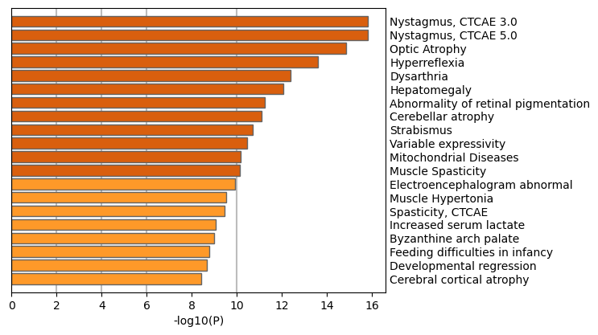
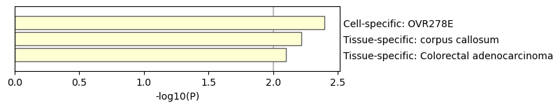
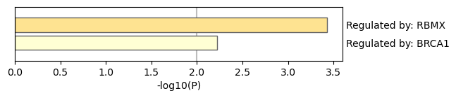
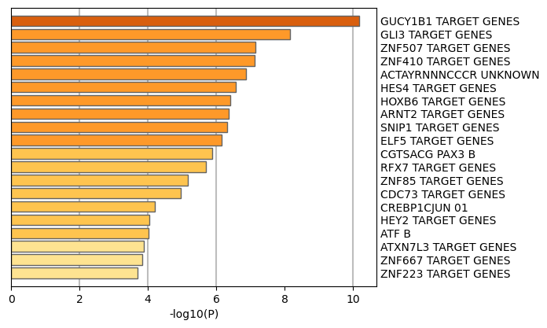

Metascape Gene List Analysis Report
metascape.org1
Bar Graph Summary
Figure 1. Bar graph of enriched terms across input gene lists, colored by p-values.
|

|

|
Metascape only visualizes the top 20 clusters. Up to 100 enriched clusters can be viewed here.

|
The top-level Gene Ontology biological processes can be viewed here.

|
Gene Lists
User-provided gene identifiers are first converted into their corresponding H. sapiens Entrez gene IDs using the latest version of the database (last updated on 2026-02-01). If multiple identifiers correspond to the same Entrez gene ID, they will be considered as a single Entrez gene ID in downstream analyses. The gene lists are summarized in Table 1.
Table 1. Statistics of input gene lists.
| Name |
Total |
Unique |
| MyList |
588 |
584 |
Gene Annotation
The following are the list of annotations retrieved from the latest version of the database (last updated on 2026-02-01) (Table 2).
Table 2. Gene annotations extracted
| Name |
Type |
Description |
| Gene Symbol |
Description |
Primary HUGO gene symbol. |
| Description |
Description |
Short description. |
| Biological Process (GO) |
Function/Location |
Descriptions summarized based on gene ontology database, where up to three most informative GO terms are kept. |
| Cellular Component (GO) |
Function/Location |
Descriptions summarized based on gene ontology database, where up to three most informative GO terms are kept. |
| GOSlim (Ontology) |
Function/Location |
GOSlim (Ontology) |
| Molecular Function (GO) |
Function/Location |
Descriptions summarized based on gene ontology database, where up to three most informative GO terms are kept. |
| Kinase Class (UniProt) |
Function/Location |
Detailed kinase classes. |
| Protein Function (Protein Atlas) |
Function/Location |
Protein Function (Protein Atlas) |
| Subcellular Location (Protein Atlas) |
Function/Location |
Subcellular Location (Protein Atlas) |
| Drug (DrugBank) |
Genotype/Phenotype/Disease |
Drug information for the given gene as target. |
| Protein Functions (ChatGPT) |
Description |
Uncurated gene functions described by ChatGPT. |
| Disease & Drugs (ChatGPT) |
Genotype/Phenotype/Disease |
Uncurated disease and drug associations described by ChatGPT. |
| Canonical Pathways
|
Ontology |
Canonical Pathways
|
| Hallmark Gene Sets
|
Ontology |
Hallmark Gene Sets
|
Pathway and Process Enrichment Analysis
For each given gene list, pathway and process enrichment analysis have been carried out with the following ontology sources: KEGG Pathway, GO Biological Processes, GO Cellular Components, Reactome Gene Sets, Canonical Pathways, CORUM, WikiPathways, and PANTHER Pathway. All genes in the genome have been used as the enrichment background. Terms with a p-value < 0.01, a minimum count of 3, and an enrichment factor > 1.5 (the enrichment factor is the ratio between the observed counts and the counts expected by chance) are collected and grouped into clusters based on their membership similarities. More specifically, p-values are calculated based on the cumulative hypergeometric distribution
2, and q-values are calculated using the Benjamini-Hochberg procedure to account for multiple testings
3. Kappa scores
4 are used as the similarity metric when performing hierarchical clustering on the enriched terms, and sub-trees with a similarity of > 0.3 are considered a cluster. The most statistically significant term within a cluster is chosen to represent the cluster.
Table 3. Top 20 clusters with their representative enriched terms (one per cluster). "Count" is the number of genes in the user-provided lists with membership in the given ontology term. "%" is the percentage of all of the user-provided genes that are found in the given ontology term (only input genes with at least one ontology term annotation are included in the calculation). "Log10(P)" is the p-value in log base 10. "Log10(q)" is the multi-test adjusted p-value in log base 10.
| GO |
Category |
Description |
Count |
% |
Log10(P) |
Log10(q) |
| GO:0031966 |
GO Cellular Components |
mitochondrial membrane |
60 |
10.27 |
-18.68 |
-14.30 |
| GO:0090407 |
GO Biological Processes |
organophosphate biosynthetic process |
47 |
8.05 |
-16.27 |
-12.24 |
| GO:0070647 |
GO Biological Processes |
protein modification by small protein conjugation or removal |
51 |
8.73 |
-13.33 |
-9.80 |
| GO:0009267 |
GO Biological Processes |
cellular response to starvation |
24 |
4.11 |
-12.25 |
-8.87 |
| GO:1901137 |
GO Biological Processes |
carbohydrate derivative biosynthetic process |
40 |
6.85 |
-11.75 |
-8.45 |
| GO:0005774 |
GO Cellular Components |
vacuolar membrane |
37 |
6.34 |
-10.93 |
-7.76 |
| GO:0010506 |
GO Biological Processes |
regulation of autophagy |
29 |
4.97 |
-9.51 |
-6.46 |
| GO:0006869 |
GO Biological Processes |
lipid transport |
28 |
4.79 |
-9.40 |
-6.37 |
| GO:0141124 |
GO Biological Processes |
intracellular signaling cassette |
44 |
7.53 |
-9.30 |
-6.30 |
| GO:0005759 |
GO Cellular Components |
mitochondrial matrix |
35 |
5.99 |
-9.21 |
-6.23 |
| hsa04150 |
KEGG Pathway |
mTOR signaling pathway |
18 |
3.08 |
-8.72 |
-5.79 |
| R-HSA-73887 |
Reactome Gene Sets |
Death Receptor Signaling |
16 |
2.74 |
-8.21 |
-5.30 |
| GO:0030991 |
GO Cellular Components |
intraciliary transport particle A |
8 |
1.37 |
-8.15 |
-5.25 |
| GO:0000959 |
GO Biological Processes |
mitochondrial RNA metabolic process |
10 |
1.71 |
-7.05 |
-4.32 |
| GO:0098791 |
GO Cellular Components |
Golgi apparatus subcompartment |
26 |
4.45 |
-7.01 |
-4.30 |
| hsa05208 |
KEGG Pathway |
Chemical carcinogenesis - reactive oxygen species |
19 |
3.25 |
-6.97 |
-4.27 |
| GO:0000139 |
GO Cellular Components |
Golgi membrane |
36 |
6.16 |
-6.72 |
-4.08 |
| GO:0055088 |
GO Biological Processes |
lipid homeostasis |
17 |
2.91 |
-6.39 |
-3.78 |
| GO:0048471 |
GO Cellular Components |
perinuclear region of cytoplasm |
36 |
6.16 |
-6.33 |
-3.74 |
| GO:0048193 |
GO Biological Processes |
Golgi vesicle transport |
21 |
3.60 |
-6.25 |
-3.68 |
To further capture the relationships between the terms, a subset of enriched terms has been selected and rendered as a network plot, where terms with a similarity > 0.3 are connected by edges. We select the terms with the best p-values from each of the 20 clusters, with the constraint that there are no more than 15 terms per cluster and no more than 250 terms in total. The network is visualized using
Cytoscape5, where each node represents an enriched term and is colored first by its cluster ID (Figure 2.a) and then by its p-value (Figure 2.b). These networks can be interactively viewed in Cytoscape through the .cys files (contained in the Zip package, which also contains a publication-quality version as a PDF) or within a browser by clicking on the web icon. For clarity, term labels are only shown for one term per cluster, so it is recommended to use Cytoscape or a browser to visualize the network in order to inspect all node labels. We can also export the network into a PDF file within Cytoscape, and then edit the labels using Adobe Illustrator for publication purposes. To switch off all labels, delete the "Label" mapping under the "Style" tab within Cytoscape, and then export the network view.
Figure 2. Network of enriched terms: (a) colored by cluster ID, where nodes that share the same cluster ID are typically close to each other; (b) colored by p-value, where terms containing more genes tend to have a more significant p-value.
Protein-protein Interaction Enrichment Analysis
For each given gene list, protein-protein interaction enrichment analysis has been carried out with the following databases: STRING
6, BioGrid
7, OmniPath
8, InWeb_IM
9.Only physical interactions in STRING (physical score > 0.132) and BioGrid are used (
details). The resultant network contains the subset of proteins that form physical interactions with at least one other member in the list. If the network contains between 3 and 500 proteins, the Molecular Complex Detection (MCODE) algorithm
10 has been applied to identify densely connected network components. The MCODE networks identified for individual gene lists have been gathered and are shown in Figure 3.
Pathway and process enrichment analysis has been applied to each MCODE component independently, and the three best-scoring terms by p-value have been retained as the functional description of the corresponding components, shown in the tables underneath corresponding network plots within Figure 3.
Figure 3. Protein-protein interaction network and MCODE components identified in the gene lists.
 | |  |


| |
|
| GO |
Description |
Log10(P) |
| GO:0031966 |
mitochondrial membrane |
-19.9 |
| GO:0008610 |
lipid biosynthetic process |
-17.8 |
| R-HSA-556833 |
Metabolism of lipids |
-17.2 |
| |
| Color |
MCODE |
GO |
Description |
Log10(P) |
|
MCODE_1 |
R-HSA-6811440 |
Retrograde transport at the Trans-Golgi-Network |
-7.8 |
|
MCODE_1 |
R-HSA-159236 |
Transport of Mature mRNA derived from an Intron-Containing Transcript |
-7.1 |
|
MCODE_1 |
R-HSA-72202 |
Transport of Mature Transcript to Cytoplasm |
-6.9 |
|
MCODE_2 |
GO:0031463 |
Cul3-RING ubiquitin ligase complex |
-20.0 |
|
MCODE_2 |
R-HSA-9639288 |
Amino acids regulate mTORC1 |
-18.0 |
|
MCODE_2 |
GO:1903432 |
regulation of TORC1 signaling |
-15.8 |
|
MCODE_3 |
GO:0030991 |
intraciliary transport particle A |
-25.5 |
|
MCODE_3 |
GO:0030990 |
intraciliary transport particle |
-25.2 |
|
MCODE_3 |
GO:0097542 |
ciliary tip |
-22.4 |
|
MCODE_4 |
GO:0019646 |
aerobic electron transport chain |
-8.7 |
|
MCODE_4 |
GO:0042773 |
ATP synthesis coupled electron transport |
-8.6 |
|
MCODE_4 |
GO:0042775 |
mitochondrial ATP synthesis coupled electron transport |
-8.6 |
|
MCODE_5 |
GO:0006352 |
DNA-templated transcription initiation |
-14.9 |
|
MCODE_5 |
WP405 |
Eukaryotic transcription initiation |
-13.1 |
|
MCODE_5 |
GO:0006367 |
transcription initiation at RNA polymerase II promoter |
-12.6 |
|
MCODE_6 |
WP5501 |
GNAQ p R183Q drives capillary malformation |
-11.3 |
|
MCODE_6 |
WP4341 |
Non genomic actions of 1 25 dihydroxyvitamin D3 |
-9.3 |
|
MCODE_6 |
WP35 |
G protein signaling |
-8.9 |
|
MCODE_7 |
GO:0031201 |
SNARE complex |
-10.6 |
|
MCODE_7 |
GO:0030133 |
transport vesicle |
-9.0 |
|
MCODE_7 |
GO:0008021 |
synaptic vesicle |
-7.6 |
|
MCODE_8 |
R-HSA-6785807 |
Interleukin-4 and Interleukin-13 signaling |
-12.3 |
|
MCODE_8 |
R-HSA-449147 |
Signaling by Interleukins |
-9.1 |
|
MCODE_8 |
GO:0030097 |
hemopoiesis |
-8.1 |
|
MCODE_9 |
WP4923 |
Autophagy |
-12.1 |
|
MCODE_9 |
hsa04211 |
Longevity regulating pathway |
-10.1 |
|
MCODE_9 |
R-HSA-1632852 |
Macroautophagy |
-9.3 |
|
MCODE_12 |
M68 |
PID RHOA REG PATHWAY |
-8.5 |
|
MCODE_12 |
R-HSA-193648 |
NRAGE signals death through JNK |
-8.2 |
|
MCODE_12 |
R-HSA-204998 |
Cell death signalling via NRAGE, NRIF and NADE |
-7.9 |
|
MCODE_13 |
GO:0006303 |
double-strand break repair via nonhomologous end joining |
-8.3 |
|
MCODE_13 |
GO:0006302 |
double-strand break repair |
-6.4 |
|
MCODE_13 |
GO:0006281 |
DNA repair |
-5.3 |
|
MCODE_14 |
R-HSA-450321 |
JNK (c-Jun kinases) phosphorylation and activation mediated by activated human TAK1 |
-9.5 |
|
MCODE_14 |
WP2637 |
Interleukin 1 IL 1 structural pathway |
-8.4 |
|
MCODE_14 |
R-HSA-450294 |
MAP kinase activation |
-8.1 |
|
MCODE_15 |
GO:1990246 |
uniplex complex |
-11.4 |
|
MCODE_15 |
GO:0036444 |
calcium import into the mitochondrion |
-10.2 |
|
MCODE_15 |
R-HSA-8949664 |
Processing of SMDT1 |
-9.9 |
|
MCODE_17 |
hsa00510 |
N-Glycan biosynthesis |
-8.2 |
|
MCODE_17 |
GO:0006487 |
protein N-linked glycosylation |
-7.5 |
|
MCODE_17 |
GO:0009101 |
glycoprotein biosynthetic process |
-6.1 |
|
MCODE_18 |
GO:0006401 |
RNA catabolic process |
-6.4 |
|
MCODE_18 |
GO:0141188 |
nucleic acid catabolic process |
-6.3 |
|
MCODE_18 |
GO:0034655 |
nucleobase-containing compound catabolic process |
-5.7 |
|
Quality Control and Association Analysis
Gene list enrichments are identified in the following ontology categories: Cell_Type_Signatures, DisGeNET, PaGenBase, TRRUST, Transcription_Factor_Targets. All genes in the genome have been used as the enrichment background. Terms with a p-value < 0.01, a minimum count of 3, and an enrichment factor > 1.5 (the enrichment factor is the ratio between the observed counts and the counts expected by chance) are collected and grouped into clusters based on their membership similarities. The top few enriched clusters (one term per cluster) are shown in the Figure 4-8. The algorithm used here is the same as that is used for pathway and process enrichment analysis.
Figure 4. Summary of enrichment analysis in Cell Type Signatures11.
|

|
|
|
| GO |
Description |
Count |
% |
Log10(P) |
Log10(q) |
| M39037 |
FAN EMBRYONIC CTX OLIG |
43 |
7.40 |
-9.50 |
-6.20 |
| M39236 |
LAKE ADULT KIDNEY C17 COLLECTING SYSTEM PCS STRESSED DISSOC SUBSET |
17 |
2.90 |
-5.30 |
-2.70 |
| M39241 |
LAKE ADULT KIDNEY C22 ENDOTHELIAL CELLS GLOMERULAR CAPILLARIES |
12 |
2.10 |
-4.80 |
-2.40 |
| M40202 |
DESCARTES FETAL HEART ERYTHROBLASTS |
16 |
2.70 |
-3.90 |
-1.70 |
| M39070 |
MANNO MIDBRAIN NEUROTYPES HNBGABA |
28 |
4.80 |
-3.50 |
-1.40 |
| M39068 |
MANNO MIDBRAIN NEUROTYPES HDA1 |
24 |
4.10 |
-3.30 |
-1.30 |
| M39203 |
HAY BONE MARROW NEUTROPHIL |
20 |
3.40 |
-3.30 |
-1.30 |
| M39102 |
ZHONG PFC C3 ASTROCYTE |
18 |
3.10 |
-3.20 |
-1.20 |
| M39233 |
LAKE ADULT KIDNEY C14 DISTAL CONVOLUTED TUBULE |
12 |
2.10 |
-3.10 |
-1.20 |
| M40094 |
DESCARTES MAIN FETAL RETINAL PIGMENT CELLS |
11 |
1.90 |
-2.90 |
-1.00 |
| M39055 |
MANNO MIDBRAIN NEUROTYPES HRGL2A |
23 |
3.90 |
-2.80 |
-0.95 |
| M39271 |
HU FETAL RETINA RPE |
14 |
2.40 |
-2.80 |
-0.92 |
| M39069 |
MANNO MIDBRAIN NEUROTYPES HDA2 |
20 |
3.40 |
-2.60 |
-0.81 |
| M41746 |
RUBENSTEIN SKELETAL MUSCLE SMOOTH MUSCLE CELLS |
18 |
3.10 |
-2.50 |
-0.79 |
| M39196 |
HAY BONE MARROW EOSINOPHIL |
5 |
0.86 |
-2.30 |
-0.60 |
| M41688 |
TRAVAGLINI LUNG NEUTROPHIL CELL |
15 |
2.60 |
-2.20 |
-0.57 |
| M41699 |
TRAVAGLINI LUNG CLASSICAL MONOCYTE CELL |
12 |
2.10 |
-2.20 |
-0.53 |
| M39224 |
LAKE ADULT KIDNEY C5 PROXIMAL TUBULE EPITHELIAL CELLS STRESS INFLAM |
16 |
2.70 |
-2.10 |
-0.48 |
| M39168 |
MURARO PANCREAS ALPHA CELL |
20 |
3.40 |
-2.10 |
-0.47 |
| M39099 |
ZHONG PFC C4 PTGDS POS OPC |
8 |
1.40 |
-2.10 |
-0.47 |
|
Figure 5. Summary of enrichment analysis in DisGeNET12.
|

|
|
|
| GO |
Description |
Count |
% |
Log10(P) |
Log10(q) |
| C1963184 |
Nystagmus, CTCAE 3.0 |
55 |
9.40 |
-16.00 |
-12.00 |
| C4554036 |
Nystagmus, CTCAE 5.0 |
55 |
9.40 |
-16.00 |
-12.00 |
| C0029124 |
Optic Atrophy |
45 |
7.70 |
-15.00 |
-11.00 |
| C0151889 |
Hyperreflexia |
42 |
7.20 |
-14.00 |
-9.70 |
| C0013362 |
Dysarthria |
38 |
6.50 |
-12.00 |
-8.60 |
| C0019209 |
Hepatomegaly |
39 |
6.70 |
-12.00 |
-8.30 |
| C1862475 |
Abnormality of retinal pigmentation |
24 |
4.10 |
-11.00 |
-7.60 |
| C0740279 |
Cerebellar atrophy |
29 |
5.00 |
-11.00 |
-7.50 |
| C0038379 |
Strabismus |
44 |
7.50 |
-11.00 |
-7.10 |
| C1861403 |
Variable expressivity |
28 |
4.80 |
-10.00 |
-6.90 |
| C0751651 |
Mitochondrial Diseases |
26 |
4.50 |
-10.00 |
-6.70 |
| C0026838 |
Muscle Spasticity |
38 |
6.50 |
-10.00 |
-6.70 |
| C0151611 |
Electroencephalogram abnormal |
23 |
3.90 |
-9.90 |
-6.60 |
| C0026826 |
Muscle Hypertonia |
21 |
3.60 |
-9.50 |
-6.20 |
| C4553743 |
Spasticity, CTCAE |
33 |
5.70 |
-9.50 |
-6.20 |
| C1836440 |
Increased serum lactate |
19 |
3.30 |
-9.10 |
-5.80 |
| C0240635 |
Byzanthine arch palate |
33 |
5.70 |
-9.00 |
-5.80 |
| C2674608 |
Feeding difficulties in infancy |
25 |
4.30 |
-8.80 |
-5.60 |
| C1836830 |
Developmental regression |
26 |
4.50 |
-8.70 |
-5.50 |
| C4551583 |
Cerebral cortical atrophy |
23 |
3.90 |
-8.40 |
-5.20 |
|
Figure 6. Summary of enrichment analysis in PaGenBase13.
|

|
|
|
| GO |
Description |
Count |
% |
Log10(P) |
Log10(q) |
| PGB:00073 |
Cell-specific: OVR278E |
8 |
1.40 |
-2.40 |
-0.68 |
| PGB:00027 |
Tissue-specific: corpus callosum |
4 |
0.68 |
-2.20 |
-0.56 |
| PGB:00046 |
Tissue-specific: Colorectal adenocarcinoma |
4 |
0.68 |
-2.10 |
-0.47 |
|
Figure 7. Summary of enrichment analysis in TRRUST.
|

|
|
|
| GO |
Description |
Count |
% |
Log10(P) |
Log10(q) |
| TRR01155 |
Regulated by: RBMX |
3 |
0.51 |
-3.40 |
-1.40 |
| TRR00075 |
Regulated by: BRCA1 |
5 |
0.86 |
-2.20 |
-0.56 |
|
Figure 8. Summary of enrichment analysis in Transcription Factor Targets.
|

|
|
|
| GO |
Description |
Count |
% |
Log10(P) |
Log10(q) |
| M29986 |
GUCY1B1 TARGET GENES |
42 |
7.20 |
-10.00 |
-6.70 |
| M29979 |
GLI3 TARGET GENES |
40 |
6.80 |
-8.20 |
-5.00 |
| M30333 |
ZNF507 TARGET GENES |
35 |
6.00 |
-7.10 |
-4.20 |
| M30316 |
ZNF410 TARGET GENES |
34 |
5.80 |
-7.10 |
-4.20 |
| M7165 |
ACTAYRNNNCCCR UNKNOWN |
28 |
4.80 |
-6.90 |
-4.00 |
| M29995 |
HES4 TARGET GENES |
32 |
5.50 |
-6.60 |
-3.70 |
| M30011 |
HOXB6 TARGET GENES |
33 |
5.70 |
-6.40 |
-3.60 |
| M29890 |
ARNT2 TARGET GENES |
34 |
5.80 |
-6.40 |
-3.50 |
| M30170 |
SNIP1 TARGET GENES |
37 |
6.30 |
-6.30 |
-3.50 |
| M40847 |
ELF5 TARGET GENES |
26 |
4.50 |
-6.20 |
-3.40 |
| M17318 |
CGTSACG PAX3 B |
14 |
2.40 |
-5.90 |
-3.20 |
| M30142 |
RFX7 TARGET GENES |
27 |
4.60 |
-5.70 |
-3.00 |
| M30399 |
ZNF85 TARGET GENES |
20 |
3.40 |
-5.20 |
-2.60 |
| M40778 |
CDC73 TARGET GENES |
26 |
4.50 |
-5.00 |
-2.50 |
| M16699 |
CREBP1CJUN 01 |
16 |
2.70 |
-4.20 |
-1.90 |
| M29996 |
HEY2 TARGET GENES |
8 |
1.40 |
-4.00 |
-1.80 |
| M10046 |
ATF B |
13 |
2.20 |
-4.00 |
-1.80 |
| M40770 |
ATXN7L3 TARGET GENES |
16 |
2.70 |
-3.90 |
-1.70 |
| M30373 |
ZNF667 TARGET GENES |
11 |
1.90 |
-3.80 |
-1.60 |
| M30281 |
ZNF223 TARGET GENES |
17 |
2.90 |
-3.70 |
-1.50 |
|
Reference
- Zhou et al., Metascape provides a biologist-oriented resource for the analysis of systems-level datasets. Nature Communications (2019) 10(1):1523.
- Zar, J.H. Biostatistical Analysis 1999 4th edn., NJ Prentice Hall, pp. 523
- Hochberg Y., Benjamini Y. More powerful procedures for multiple significance testing. Statistics in Medicine (1990) 9:811-818.
- Cohen, J. A coefficient of agreement for nominal scales. Educ. Psychol. Meas. (1960) 20:27-46.
- Shannon P. et al., Cytoscape: a software environment for integrated models of biomolecular interaction networks. Genome Res (2003) 11:2498-2504.
- Szklarczyk D. et al. STRING v11: protein-protein association networks with increased coverage, supporting functional discovery in genome-wide experimental datasets. Nucleic Acids Res. (2019) 47:D607-613.
- Stark C. et al. BioGRID: a general repository for interaction datasets. Nucleic Acids Res. (2006) 34:D535-539.
- Turei D. et al. A scored human protein-protein interaction network to catalyze genomic interpretation. Nat. Methods. (2016) 13:966-967.
- Li T. et al. A scored human protein-protein interaction network to catalyze genomic interpretation. Nat. Methods. (2017) 14:61-64.
- Bader, G.D. et al. An automated method for finding molecular complexes in large protein interaction networks. BMC bioinformatics (2003) 4:2.
- Subramanian A, et al. Gene set enrichment analysis: A knowledge-based approach for interpreting genome-wide expression profiles. Proc Natl Acad Sci U S A 102, 15545-15550 (2005).
- Pinero J, et al. DisGeNET: a comprehensive platform integrating information on human disease-associated genes and variants. Nucleic acids research 45, D833-D839 (2017).
- Pan JB, et al. PaGenBase: a pattern gene database for the global and dynamic understanding of gene function. PLoS One 8, e80747 (2013).
{kind=link}
{kind=link}